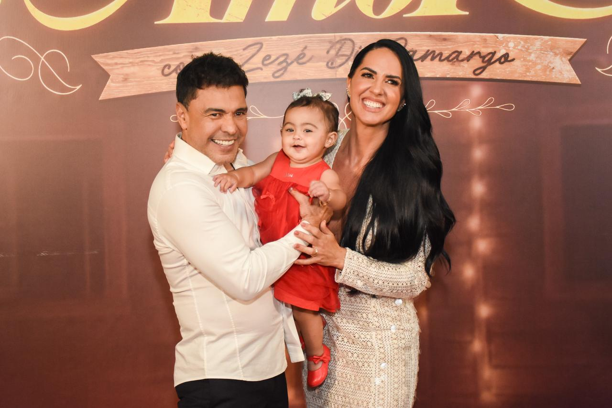
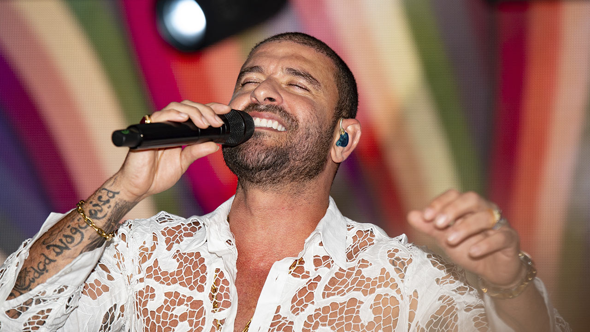

📋 Seleção do Dia
As notícias mais quentes do entretenimento brasileiro · 13 de junho de 2026 · Ir para BuzzPop

Crédito: Foto: Atual estúdio do GloboNews. Foto: Reprodução
Canal reformulará a faixa matinal e prepara alterações no “Em Ponto” em meio à queda de audiência.
Às vésperas de completar 30 anos, a GloboNews planeja mudanças na programação para tentar recuperar audiência na TV paga. A reformulação inclui alterações na faixa matinal e no programa “Em Ponto”.
O canal também prepara o lançamento de um novo jornal. As medidas ocorrem em um período de queda nos índices de audiência da emissora.
ID de aprovação: R2xvYm9OZXdzIHBsYW5l
Fontes: gente.ig.com.br / UOL / Terra / Portal NTVB / RD1
Link principal: gente.ig.com.br
Crédito da imagem: Foto: Atual estúdio do GloboNews. Foto: Reprodução
Origem da imagem: Imagem ilustrativa aprovada por revisao visual e escolhida fora das fontes da noticia.
Crédito: Imagem ilustrativa: br.freepik.com
Indicações incluem romances, títulos picantes, comédias românticas e filmes para solteiros.
Listas de filmes apresentam opções para o Dia dos Namorados, incluindo 12 produções românticas e sete títulos picantes disponíveis no streaming para quem pretende assistir a dois.
Há também indicações de comédias românticas e cinco filmes para solteiros que querem fugir da data. Outra indicação destaca o relançamento de clássicos do romance nos cinemas.
ID de aprovação: MTIgZmlsbWVzIHJvbcOi
Fontes: Capricho / UOL / G1 / Omelete / Estadão
Link principal: Capricho
Crédito da imagem: Imagem ilustrativa: br.freepik.com
Origem da imagem: Imagem ilustrativa aprovada por revisao visual e escolhida fora das fontes da noticia.
Fãs suspeitaram do uso de uma dublê no show, enquanto “Dai Dai” venceu votação sobre músicas das Copas.
A aparência de Shakira na abertura da Copa do Mundo de 2026 intrigou fãs, que levantaram a suspeita de que uma dublê teria sido usada no show. As informações disponíveis não confirmam que houve substituição da cantora.
Ao mesmo tempo, “Dai Dai”, música de Shakira, foi eleita a melhor canção das Copas do Mundo em uma votação de revista.
ID de aprovação: J0RhaSBEYWknLi4uIG1h
Fontes: O Globo / R7 / Estadão / CNN Brasil / Music Non Stop
Link principal: O Globo
Crédito da imagem: Imagem pendente de revisão
Origem da imagem: Nenhuma candidata foi aprovada pela revisao visual automatica.
Apresentador retornou ao trabalho na atração da Globo, que cresceu 66,3% no Ibope.
Tadeu Schmidt voltou ao trabalho na Central da Copa e apareceu com um novo visual. O apresentador surgiu barbudo durante sua participação no programa da Globo.
A atração registrou crescimento de 66,3% no Ibope. Ao falar sobre o retorno ao trabalho em meio a perdas na família, Tadeu afirmou que viveu o luto.
ID de aprovação: QmFyYnVkbywgVGFkZXUg
Fontes: Notícias da TV / meutimao.com.br / PressReader / Extra online / Portal UAI
Link principal: Notícias da TV
Crédito da imagem: Imagem pendente de revisão
Origem da imagem: Nenhuma candidata foi aprovada pela revisao visual automatica.

Crédito: Imagem ilustrativa: aocuboagenciamento.com.br
Ator de Tiago em “Quem Ama Cuida” afirma que pensou em desistir da carreira durante o período sem trabalho.
Gui Ferraz, intérprete de Tiago em “Quem Ama Cuida”, relembrou uma fase de quase quatro anos sem trabalho. Durante esse período, o ator chegou a pensar em desistir da carreira.
Além da novela das 9, Gui Ferraz também integra a série “Brasil 70”, produção da Netflix sobre a Copa. O ator ganhou destaque pelos trabalhos nas duas produções.
ID de aprovação: RGVzZW1wcmVnYWRvIHBv
Fontes: Notícias da TV / Extra online / Correio Braziliense / NaTelinha
Link principal: Notícias da TV
Crédito da imagem: Imagem ilustrativa: aocuboagenciamento.com.br
Origem da imagem: Imagem ilustrativa aprovada por revisao visual e escolhida fora das fontes da noticia.

Crédito: Foto: Flávia Alessandra e Otaviano Costa Divulgação
Atriz contou que os dois não chegaram a namorar antes do casamento, realizado cinco meses após eles se conhecerem.
Flávia Alessandra revelou que ela e Otaviano Costa nunca namoraram antes de se casar. O casamento aconteceu cinco meses depois de eles se conhecerem.
Ao contar como começou a história do casal, a atriz destacou o curto período entre o primeiro encontro e a decisão de oficializar a união.
ID de aprovação: Q2FzYW1lbnRvIGVtIGNp
Fontes: O Dia / Notícias da TV / Globo / Alagoas Alerta / band.com.br
Link principal: O Dia
Crédito da imagem: Foto: Flávia Alessandra e Otaviano Costa Divulgação
Origem da imagem: Imagem ilustrativa aprovada por revisao visual e escolhida fora das fontes da noticia.

Crédito: Foto: Copyright/DMCA
Camila Rodrigues abordou a separação de Bruno Gagliasso e afirmou que ficou com boleto após o término.
Camila Rodrigues falou sobre o término de seu relacionamento com Bruno Gagliasso. Ao abordar a separação, ela afirmou: “Fiquei com boleto”.
A relação dos dois envolveu uma novela e um casamento relâmpago. Camila também expôs bastidores do fim do relacionamento sem mencionar o nome do ator nesse relato.
ID de aprovação: Q2FtaWxhIFJvZHJpZ3Vl
Fontes: DOL / VEJA / UOL / Globo / R7 Entretenimento
Link principal: DOL
Crédito da imagem: Foto: Copyright/DMCA
Origem da imagem: Imagem ilustrativa aprovada por revisao visual e escolhida fora das fontes da noticia.

Crédito: Foto: Leandra Leal em entrevista ao portal LeoDias (Reprodução portal LeoDias/ montagem)
Atriz acredita que a personagem não terminará rica e terá um desfecho marcado por castigo.
Leandra Leal prevê um final triste para a vilã de Coração Acelerado. A atriz acredita que a personagem receberá um castigo no desfecho da novela.
Ao falar sobre o destino da vilã, Leandra afirmou que ela não vai terminar rica. A atriz também definiu a personagem como “amoral” ao comentar o possível encerramento de sua trajetória.
ID de aprovação: TGVhbmRyYSBMZWFsIHBy
Fontes: Notícias da TV / O Globo / CARAS Brasil / Observatório dos Famosos / O TEMPO
Link principal: Notícias da TV
Crédito da imagem: Foto: Leandra Leal em entrevista ao portal LeoDias (Reprodução portal LeoDias/ montagem)
Origem da imagem: Imagem ilustrativa aprovada por revisao visual e escolhida fora das fontes da noticia.

Crédito: Foto: Globo/Manoella Mello
Intérprete de Mau Mau em “Quem Ama Cuida”, ator abordou a reação da família e uma experiência real de homofobia.
João Victor Gonçalves, intérprete de Mau Mau em “Quem Ama Cuida”, falou sobre como sua família reagiu à sua sexualidade. O ator também revelou ter vivido um caso real de homofobia, experiência que o inspira em seu trabalho na novela.
Na trama, Mau Mau é neto do personagem interpretado por Tony Ramos e sofre homofobia na relação com o avô.
ID de aprovação: TWF1IE1hdSBkZSBRdWVt
Fontes: Notícias da TV / O Globo / NaTelinha / Terra / purepeople.com.br
Link principal: Notícias da TV
Crédito da imagem: Foto: Globo/Manoella Mello
Origem da imagem: Imagem ilustrativa aprovada por revisao visual e escolhida fora das fontes da noticia.

Crédito: Foto: Karin Hils celebrou aniversário de Lu Andrade (Foto/Instagram/@karinhils)
Ex-cantoras do Rouge trocaram farpas às vésperas de um documentário sobre o grupo.
Ex-cantoras do Rouge trocaram farpas às vésperas de um documentário. Karin Hils se pronunciou após um desabafo de Lu Andrade relacionado ao grupo.
Luciana Andrade também abordou sua saída do Rouge e esclareceu rumores sobre sua trajetória. Ao falar dos bastidores, afirmou que não brigava com ninguém e mencionou mentira e arrependimento.
ID de aprovação: w4BzIHbDqXNwZXJhcyBk
Fontes: Notícias da TV / OFuxico / POPline / R7 Entretenimento / gente.ig.com.br
Link principal: Notícias da TV
Crédito da imagem: Foto: Karin Hils celebrou aniversário de Lu Andrade (Foto/Instagram/@karinhils)
Origem da imagem: Imagem ilustrativa aprovada por revisao visual e escolhida fora das fontes da noticia.

Crédito: REPRODUÇÃO/INSTAGRAM
Lexa celebrou a gravidez de Tati Machado, anunciada após uma perda gestacional.
Tati Machado e Bruno Monteiro anunciaram uma nova gravidez. O anúncio ocorre após Tati ter perdido um bebê em uma gestação anterior.
Amiga de Tati, Lexa celebrou a notícia com a frase: “Já amo tanto esse baby”. Tati também foi surpreendida no Mais Você após anunciar que está grávida novamente.
ID de aprovação: QW1pZ2FzIHVuaWRhcyBh
Fontes: O Globo / NaTelinha / Midiamax / Diário Gaúcho / Veja Saúde
Link principal: O Globo
Crédito da imagem: REPRODUÇÃO/INSTAGRAM
Origem da imagem: Imagem ilustrativa aprovada por revisao visual e escolhida fora das fontes da noticia.

Crédito: Foto: Retrato del artista británico David Hockney, 2016. Foto: cortesía Museo Guggenheim Bilbao.
Artista, que viveu de 1937 a 2026, ficou associado ao uso marcante de luz e cor.
David Hockney morreu aos 88 anos. Nascido em 1937, o pintor britânico ficou conhecido por trabalhos marcados pela luz e pela cor, incluindo representações da Califórnia em tons vibrantes.
As piscinas também apareceram em sua arte, retratadas como espaços de paixões movediças. Hockney ainda abordou a ternura como parte da vida cotidiana em suas obras.
ID de aprovação: RGF2aWQgSG9ja25leSAo
Fontes: Folha de S.Paulo / Valor Econômico / Estadão / InfoMoney
Link principal: Folha de S.Paulo
Crédito da imagem: Foto: Retrato del artista británico David Hockney, 2016. Foto: cortesía Museo Guggenheim Bilbao.
Origem da imagem: Imagem ilustrativa aprovada por revisao visual e escolhida fora das fontes da noticia.

Crédito: Foto: 2025-11-12-02-03-54.jpg" />
A filha de Graciele Lacerda e Zezé Di Camargo passou por uma cirurgia para retirar um nódulo do rosto.
A filha de Graciele Lacerda e Zezé Di Camargo passou por um procedimento médico para retirar um nódulo do rosto. A criança também realizou uma biópsia.
Graciele chorou ao comentar a cirurgia da filha. Após o procedimento no rosto da criança, Zezé Di Camargo mostrou a bebê.
ID de aprovação: R3JhY2llbGUgY2hvcmEg
Fontes: CNN Brasil / O Globo / Estadão / R7 Entretenimento / OFuxico
Link principal: CNN Brasil
Crédito da imagem: Foto: 2025-11-12-02-03-54.jpg" />
Origem da imagem: Imagem ilustrativa aprovada por revisao visual e escolhida fora das fontes da noticia.

Crédito: Foto: Reprodução)" decoding="async" loading="lazy" srcset="https://www.tudopop.com/wp-content/uploads/2023/10/james-bond-600x337.jpg 600w, https://www.tudopop.com/wp-content/upload
Cantor afirmou que a condição afetou sua voz e falou sobre o tratamento.
Diogo Nogueira relatou estar com candidíase nas cordas vocais. O cantor explicou o tratamento da condição, que afetou sua voz, após também ter enfrentado uma laringite bacteriana.
Ao revelar detalhes do problema de saúde, Diogo afirmou que usou um aparelho para conseguir cantar. A alteração em sua voz também chamou atenção durante uma participação no programa “Encontro”.
ID de aprovação: J0NhbmRpZMOtYXNlJyBu
Fontes: O Globo / VEJA / OFuxico / Revista Fórum / Observatório dos Famosos
Link principal: O Globo
Crédito da imagem: Foto: Reprodução)" decoding="async" loading="lazy" srcset="https://www.tudopop.com/wp-content/uploads/2023/10/james-bond-600x337.jpg 600w, https://www.tudopop.com/wp-content/upload
Origem da imagem: Imagem ilustrativa aprovada por revisao visual e escolhida fora das fontes da noticia.
Premiação reconhece nomes que geram impacto positivo no Brasil.
O Prêmio Faz Diferença homenageou Gilberto Gil e celebrou destaques de 2025. Promovida pela Firjan SESI e pelo O Globo, a premiação reconhece pessoas que geram impacto positivo no Brasil.
Afonso Borges conquistou o prêmio na categoria Livros. Debora Bloch foi reconhecida por interpretar Odete Roitman no remake de “Vale Tudo”, trabalho que classificou como um enorme desafio e uma grande responsabilidade.
ID de aprovação: UHLDqm1pbyBGYXogRGlm
Fontes: O Globo / Valor Econômico / Sistema Firjan / Rádio Itatiaia
Link principal: O Globo
Crédito da imagem: Imagem pendente de revisão
Origem da imagem: Nenhuma candidata foi aprovada pela revisao visual automatica.

Crédito: Foto: Lucas Lima - Reprodução/Instagram
Lucas Lima esclareceu dúvidas de fãs após o término com Sandy e abordou boatos envolvendo a ex.
Lucas Lima respondeu a dúvidas de fãs sobre um rumor de casamento ou relacionamento com outro homem. O assunto foi abordado depois do término com Sandy.
Na mesma ocasião, Lucas também falou sobre boatos envolvendo Sandy e apresentou uma forma de evitá-los. Os detalhes dessa estratégia não foram informados.
ID de aprovação: THVjYXMgTGltYSByZXNw
Fontes: Hugo Gloss / Globo / CNN Brasil / NaTelinha / Observatório dos Famosos
Link principal: Hugo Gloss
Crédito da imagem: Foto: Lucas Lima - Reprodução/Instagram
Origem da imagem: Imagem ilustrativa aprovada por revisao visual e escolhida fora das fontes da noticia.

Crédito: Reprodução/Instagram
Órgão divulgou fotos do presídio após relatos da defesa sobre falta de higiene e escorpiões.
A secretaria responsável pelo presídio onde Deolane está presa negou que a cela tenha comida estragada e escorpião. O órgão também divulgou fotos da unidade após as denúncias.
A defesa de Deolane relatou falta de higiene e presença de escorpiões no local. As manchetes apresentam versões divergentes sobre as condições encontradas na unidade prisional.
ID de aprovação: U2VjcmV0YXJpYSBuZWdh
Fontes: UOL Notícias / G1 / Estadão / R7 / Midiamax
Link principal: UOL Notícias
Crédito da imagem: Reprodução/Instagram
Origem da imagem: Imagem ilustrativa aprovada por revisao visual e escolhida fora das fontes da noticia.

Crédito: Imagem ilustrativa: caras.com.br
Ela afirmou ter se sentido invadida após a repercussão de uma discussão com Alberto Cowboy em um hotel.
A esposa de Alberto Cowboy se pronunciou após o vazamento e a repercussão de uma discussão conjugal ocorrida em um hotel. Ao falar sobre o episódio, ela afirmou que se sentiu invadida.
Alberto Cowboy também quebrou o silêncio após a divulgação da briga com a esposa. Ele declarou que a privacidade do casal foi invadida.
ID de aprovação: RXNwb3NhIGRlIEFsYmVy
Fontes: CNN Brasil / Globo / UOL / R7 / Midiamax
Link principal: CNN Brasil
Crédito da imagem: Imagem ilustrativa: caras.com.br
Origem da imagem: Imagem ilustrativa aprovada por revisao visual e escolhida fora das fontes da noticia.

Crédito: Foto: Margaret Kerry
Atriz e dançarina inspirou a personagem Sininho, de “Peter Pan”.
Margaret Kerry morreu aos 97 anos. Atriz e dançarina, ela foi modelo para Sininho, de “Peter Pan”, e inspirou a personagem.
Nascida em 1929 e morta em 2026, Kerry também foi identificada como a intérprete original de Tinker Bell da Disney, nome em inglês da fada Sininho.
ID de aprovação: TWFyZ2FyZXQgS2Vycnkg
Fontes: Folha de S.Paulo / Omelete / AdoroCinema / Animation Magazine
Link principal: Folha de S.Paulo
Crédito da imagem: Foto: Margaret Kerry
Origem da imagem: Imagem ilustrativa aprovada por revisao visual e escolhida fora das fontes da noticia.